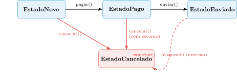
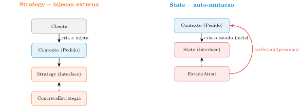

O Padrão State e o Padrão Adapter: o Fluxo Seguro do Objeto e a Fronteira Externa
Aula 12 — Programação Orientada a Objetos
1 Proposta da Aula
Na Aula 11, o Pedido ganhou dois terços do “tríptico da estabilidade”: o dado deixou de correr risco de aliasing (Value Object) e a gênese deixou de ser um construtor sujo de parâmetros arriscados (Builder, Factory Method). Falta o terceiro pilar: o fluxo — como um objeto muda de comportamento ao longo do seu próprio ciclo de vida sem recair no labirinto de if/else que o Strategy já baniu do cálculo de pagamento. É exatamente aí que o Pedido ainda esconde um problema: ele controla se pode ser pago, cancelado ou enviado através de uma variável status (uma String ou um int) verificada no topo de cada método — a mesma Obsessão por Primitivos da Aula 11, agora infiltrada no comportamento, não no dado.
O padrão que resolve isso — o State — tem uma peculiaridade notável: sua topologia de classes (um Contexto, uma interface, implementações concretas) é quase indistinguível da topologia do Strategy que já dominamos. E é exatamente por isso que o contraste entre os dois vai ser o fio condutor da primeira metade desta aula: mesma estrutura, intenção arquitetural completamente diferente.
Na segunda metade, a aula muda de direção. Depois de o objeto estar protegido por dentro — dado, gênese e agora fluxo —, resta uma fronteira que nenhum dos padrões anteriores tocou: o ponto onde o sistema conversa com o mundo externo — um SDK de pagamento, uma biblioteca de auditoria de terceiros, um sistema legado que a empresa não pode reescrever. Quando a interface desse mundo externo não bate com a que o domínio espera, surge o padrão Adapter.
O roteiro, em quatro perguntas:
- Por que reduzir o ciclo de vida de um objeto a uma
String statusverificada em cada método é uma bomba-relógio de manutenção, e não apenas um estilo de código menos elegante? - Como o State converte esse controle de fluxo em objetos polimórficos — e, já que sua estrutura de classes parece a do Strategy, por que os dois resolvem problemas arquiteturais diferentes?
- Quando um estado decide para onde o objeto vai a seguir, quem deveria guardar essa decisão — o próprio estado, ou o objeto hospedeiro?
- Se o sistema precisa conversar com uma biblioteca cuja interface não foi desenhada para o seu domínio, e você não pode alterar nem a biblioteca nem o jeito como o resto do sistema já fala, quem deveria absorver essa tradução?
Considere o nosso Pedido, já purificado pelo Strategy (Aula 10) e nascido em segurança pelo Builder (Aula 11). Ele ainda tem um método pagar() que começa perguntando “em que status eu estou?”, um cancelar() que repete a mesma pergunta, e um enviar() que a repete outra vez. Adicionar um único estado novo — digamos, “EM_ANALISE_DE_FRAUDE” — significa abrir os três métodos e inserir um novo if em cada um. É esse Pedido, comportamentalmente ainda no modelo antigo, que os próximos blocos corrigem — e, feito isso, a aula vira a atenção para a fronteira que liga esse Pedido já robusto ao resto do mundo.
2 O Antipadrão do Status como Primitivo
O método que sempre começa com uma pergunta. Considere o Pedido tal como ele ainda está, depois do Strategy e do Builder — funcional, mas com o ciclo de vida codificado em condicionais:
public class Pedido {
private String status = "NOVO"; // Obsessao por Primitivos, de volta
public void pagar() {
if (status.equals("NOVO")) {
processarPagamento();
status = "PAGO";
} else if (status.equals("PAGO")) {
throw new IllegalStateException("Pedido ja esta pago!");
} else if (status.equals("ENVIADO")) {
throw new IllegalStateException("Pedido ja foi enviado!");
}
// E se adicionarmos o estado "CANCELADO" ou "EM_ANALISE_DE_FRAUDE"?
}
public void cancelar() {
if (status.equals("NOVO")) {
status = "CANCELADO";
} else if (status.equals("PAGO")) {
estornar();
status = "CANCELADO";
} else if (status.equals("ENVIADO")) {
throw new IllegalStateException("Impossivel cancelar: pedido em transito!");
}
}
// enviar() repete a mesma bateria de "if (status.equals(...))"
}Repare no padrão: a primeira linha de cada método é sempre uma verificação de status, e a lógica de negócio real vem depois, aninhada dentro do if correto. Isso cria um acoplamento temporal — a ordem das chamadas importa (não dá para cancelar antes de existir, nem pagar duas vezes), mas a regra que garante essa ordem está espalhada e escondida atrás de condicionais repetidas em cada método.
Três sintomas concretos. Primeiro, a fragilidade de evolução: adicionar um único estado novo (por exemplo, “EM_ANALISE_DE_FRAUDE” entre “NOVO” e “PAGO”) exige abrir pagar(), cancelar() e enviar() e inserir um else if em cada um — o novo estado age como uma “bomba” que obriga a mexer em todos os métodos que dependem de status, violando diretamente o OCP já visto na Aula 10. Segundo, a complexidade ciclomática: a lógica de transição de estado fica misturada com a lógica de negócio (processar pagamento, estornar), tornando o teste unitário exaustivo — para testar “cancelar um pedido pago” é preciso primeiro montar um pedido no estado certo, exatamente o problema de testabilidade que o Strategy já havia resolvido para os algoritmos de pagamento. Terceiro, e talvez o mais familiar: status — normalmente uma String ou um int — é um caso claro de Obsessão por Primitivos (Aula 11): nada no tipo String impede que alguém escreva status = "PGO" por engano, ou compare com um valor que nunca existiu. O compilador não ajuda em nada.
O padrão State surge exatamente para converter esse controle de fluxo, hoje expresso em condicionais sobre um primitivo, em estrutura de objetos — a mesma virada conceitual que a Aula 11 já fez para o dado (double → Dinheiro), agora aplicada ao comportamento ao longo do tempo.
2.1 O Antipadrão do Status e a Fragilidade de Evolução
Pedido do antipadrão acima, quantos métodos já existentes precisam ser abertos e editados — e o que esse número revela sobre a real causa da fragilidade do design?
Escreva sua resposta e compare com um colega antes de avançar (2 min).
- □ No
Pedidodo antipadrão, inserir um novo estado exige editar apenas o métodopagar(), já que é o único que decide a transição de “NOVO” para “PAGO”. - □ Um teste unitário que verifica “cancelar um pedido já pago dispara estorno” precisa, antes de chamar
cancelar(), montar umPedidocujo campostatusjá esteja manualmente ajustado para"PAGO". - □ Se o tipo do campo
statusfosse trocado deStringpara umenumJava, isso sozinho eliminaria a necessidade de abrirpagar(),cancelar()eenviar()ao adicionar um estado novo. - □ A fragilidade de evolução do
Pedidodo antipadrão nasce do fato de a lógica de transição de estado estar fisicamente distribuída dentro de vários métodos que também contêm lógica de negócio não relacionada ao fluxo.
3 O Padrão State: Estrutura e Delegação
A motivação central: tratar estados como estratégias de comportamento. A limpeza arquitetural do State vem de uma virada conceitual simples: em vez de tratar cada fase do ciclo de vida como um valor guardado numa variável, tratamos cada fase como uma classe polimórfica. O Pedido (o Contexto) deixa de saber “como” reagir a pagar() ou cancelar() e passa a perguntar apenas ao “quem” ele é no momento — delegando toda a decisão para um objeto de estado. Quando o estado muda, o Contexto simplesmente aponta para uma instância nova de uma classe diferente. O sistema passa a crescer horizontalmente: um novo estado significa uma nova classe, não um novo if espalhado por três métodos.
A estrutura em três papéis. O padrão define:
- Context (Contexto): a classe que os clientes efetivamente usam — no nosso caso,
Pedido. Mantém uma referência para oEstadoAtuale delega todas as operações sensíveis ao estado. - State (interface): o contrato dos métodos que dependem do estado.
- Concrete States (Estados Concretos): uma classe por fase do ciclo de vida, cada uma implementando o comportamento correspondente.
public interface EstadoPedido {
void pagar(Pedido pedido);
void cancelar(Pedido pedido);
void enviar(Pedido pedido);
}
public class EstadoNovo implements EstadoPedido {
@Override
public void pagar(Pedido pedido) {
System.out.println("Pagamento processado!");
pedido.setEstado(new EstadoPago());
}
@Override
public void cancelar(Pedido pedido) {
pedido.setEstado(new EstadoCancelado());
}
@Override
public void enviar(Pedido pedido) {
throw new IllegalStateException("Pedido ainda nao foi pago!");
}
}O EstadoNovo sabe que, após um pagamento bem-sucedido, o próximo passo lógico é o EstadoPago — toda essa inteligência de fluxo está encapsulada fora da classe Pedido, que fica livre para representar apenas a entidade de negócio.
A “cegueira” deliberada do Contexto. O Pedido, agora um hospedeiro, limita-se a repassar cada chamada para o objeto de estado atual:
public class Pedido {
private EstadoPedido estadoAtual;
private double valor;
public Pedido(double valor) {
this.valor = valor;
this.estadoAtual = new EstadoNovo(); // todo pedido nasce em EstadoNovo
}
// Invocado apenas pelos objetos de estado concreto
protected void setEstado(EstadoPedido novoEstado) {
this.estadoAtual = novoEstado;
}
public void pagar() { estadoAtual.pagar(this); }
public void cancelar() { estadoAtual.cancelar(this); }
public void enviar() { estadoAtual.enviar(this); }
public double getValor() { return valor; }
}O ponto-chave é setEstado: marcado como protected, só as classes de estado (que residem no mesmo pacote) podem disparar transições. Isso impede que um cliente externo mude o estado do pedido de forma arbitrária — por exemplo, saltando de “Novo” direto para “Entregue” — preservando a integridade da máquina de estados. Comparando com o Pedido do bloco anterior: a complexidade ciclomática da classe caiu a quase zero, porque a “inteligência” de fluxo foi inteiramente terceirizada. Se você quer saber o que acontece quando um EstadoNovo é cancelado, a resposta mora inteira dentro de EstadoNovo.cancelar() — não espalhada por um método de 100 linhas com 10 ifs.

O diagrama resume o ciclo de vida completo que os próximos parágrafos implementam: de EstadoNovo, o pedido pode ser pago (indo para EstadoPago) ou cancelado diretamente; de EstadoPago, pode ser enviado ou cancelado (com estorno); de EstadoEnviado, o cancelamento deixa de ser permitido — a transição em vermelho tracejado marca uma operação que a classe correspondente rejeita com exceção, não uma transição real.
O contraste que importa: Strategy vs. State. Peguem o diagrama do Strategy da Aula 10 e comparem com o Pedido/EstadoPedido acima — a semelhança estrutural é real, não coincidência: ambos têm um Contexto, uma interface e implementações concretas intercambiáveis via polimorfismo. Mas a intenção arquitetural é oposta em um ponto preciso: quem decide qual implementação está ativa, e quando.
- No Strategy, um agente externo ao Contexto — o código cliente — decide qual
ConcretaEstrategiainjetar, normalmente uma única vez (ou trocando por decisão explícita do usuário, como o frete escolhido no carrinho). O Contexto nunca troca de estratégia sozinho. - No State, o próprio objeto de estado ativo decide, como consequência de uma operação de negócio, qual será o próximo estado — e dispara a transição chamando
setEstadono Contexto. Ninguém de fora precisa (nem deveria) injetar umEstadoPagomanualmente; ele nasce como resultado depagar()ser chamado sobre umEstadoNovo.
Em outras palavras: o Strategy injeta um algoritmo de fora para dentro; o State faz o objeto mudar de “personalidade” de dentro para fora, como consequência do seu próprio ciclo de vida. Dizer que “State é só Strategy com outro nome” ignora exatamente esse ponto — a topologia de classes é parecida porque ambos resolvem “substituir condicionais por polimorfismo”, mas o gatilho da substituição de implementação mora em lugares opostos.

O painel da esquerda mostra a seta de controle vindo de fora (o Cliente injeta a estratégia); o painel da direita mostra a seta de controle saindo do próprio estado ativo em direção ao Contexto (setEstado) — o Cliente sequer aparece no diagrama do State, porque ele nunca decide diretamente qual estado vem a seguir.
3.1 Strategy vs. State: Mesma Topologia, Intenções Diferentes
Escreva sua resposta e compare com um colega antes de avançar (2 min).
- □ Em um
CalculadoraDeFreteque usa Strategy, é o próprio objetoFreteExpressoinjetado que decide, sozinho e sem intervenção externa, substituir-se porFreteGratisdurante a execução do sistema. - □ Num
Pedidousando State, é fisicamente o objetoEstadoNovo— e não um código cliente externo chamandopedido.setEstrategia(new EstadoPago())— quem invoca a transição paraEstadoPagocomo consequência depagar()ter sido chamado. - □ Se um
ConcreteStatedo padrão State fosse instanciado e injetado manualmente por código cliente externo antes de qualquer operação de negócio ocorrer no Contexto, essa prática ainda preservaria integralmente a intenção arquitetural original do State Pattern. - □ O fato de tanto Strategy quanto State definirem uma interface implementada por múltiplas classes concretas é suficiente, por si só, para classificá-los como o mesmo padrão de projeto sob nomes diferentes.
4 Onde Colocar a Transição, e o Ciclo de Vida Robusto
O dilema mais difícil do State Pattern. Nos exemplos acima, EstadoNovo.pagar() instancia diretamente new EstadoPago(). Isso funciona, mas cria uma decisão de design que precisa ser feita conscientemente: onde deve morar o conhecimento de “qual é o próximo estado”?
- Opção A — Transição nos Estados (a que usamos até aqui): cada estado conhece o seu sucessor. Prós: transições dinâmicas e fluidas, sem nenhuma lógica condicional no Contexto. Contras: os estados ficam acoplados entre si —
EstadoNovoprecisa conhecer a classeEstadoPago. - Opção B — Transição no Contexto: o Contexto centraliza a “tabela” de transições.
// Opcao B: o Contexto decide, reintroduzindo condicional
protected void avancarFluxo() {
if (estadoAtual instanceof EstadoNovo) {
this.estadoAtual = new EstadoPago();
} else if (estadoAtual instanceof EstadoPago) {
this.estadoAtual = new EstadoEnviado();
}
// o Contexto volta a ter logica condicional - o que queriamos evitar
}Prós: os estados ficam totalmente isolados uns dos outros. Contras: o Contexto volta a ter lógica condicional — exatamente o problema que o State foi criado para eliminar.
O veredito prático: use transições nos estados (Opção A) para fluxos de negócio naturais e bem definidos, como o ciclo de vida de um Pedido — o acoplamento entre EstadoNovo e EstadoPago é aceitável porque essa sequência já é uma regra de negócio estável, não uma variação livre. Uma técnica avançada para reduzir esse acoplamento sem voltar à Opção B é fazer o método de estado retornar o próximo estado, deixando para o Contexto apenas a tarefa de atualizar a referência (this.estado = estado.proximo();), ou usar uma fábrica de estados dedicada — sem, ainda assim, reintroduzir condicionais no Contexto.
O ciclo de vida robusto: o polimorfismo cobrindo os casos de borda. A força real do State aparece quando o mesmo método se comporta de forma distinta em cada classe, sem um único if (status == ...):
public class EstadoPago implements EstadoPedido {
@Override
public void pagar(Pedido pedido) {
throw new IllegalStateException("Pedido ja esta pago!");
}
@Override
public void cancelar(Pedido pedido) {
realizarEstornoFinanceiro(pedido);
pedido.setEstado(new EstadoCancelado());
System.out.println("Pedido estornado e cancelado.");
}
@Override
public void enviar(Pedido pedido) {
pedido.setEstado(new EstadoEnviado());
}
}
public class EstadoEnviado implements EstadoPedido {
@Override
public void pagar(Pedido pedido) {
throw new IllegalStateException("Pedido ja foi enviado!");
}
@Override
public void cancelar(Pedido pedido) {
throw new DomainException("Impossivel cancelar: produto em transito!");
}
@Override
public void enviar(Pedido pedido) {
throw new IllegalStateException("Pedido ja foi enviado!");
}
}O método cancelar() se comporta de forma distinta em cada estado: em EstadoNovo, apenas muda o status; em EstadoPago, desencadeia um estorno financeiro antes de mudar; em EstadoEnviado, proíbe a ação, protegendo a regra de negócio de que um produto em trânsito não pode ser simplesmente cancelado. Tudo isso sem um único if (status == ...) — o código torna-se auto-documentado: para saber o que acontece quando um pedido pago é cancelado, basta abrir a classe EstadoPago, isolada de ruídos de outros estados.
5 Da Fronteira Interna à Fronteira Externa: Motivação do Adapter
Com Strategy, Builder e agora State, o Pedido está protegido por dentro em três frentes: comportamento variável (Strategy), gênese (Builder) e fluxo de vida (State). Mas nenhum desses padrões toca um problema diferente: como o sistema conversa com o que está fora dele. Considere um cenário concreto e comum: a equipe de compliance da empresa exige que toda transição de estado do Pedido seja registrada num sistema de auditoria — mas esse sistema é uma biblioteca legada, mantida por outra equipe, que ninguém tem permissão (nem motivo técnico) para reescrever. A interface que essa biblioteca oferece não é a que o resto do sistema já usa para logar eventos.
O dilema é o mesmo, em espírito, do dilema do legado descrito na Aula 10: alterar o código de terceiros é impossível (biblioteca fechada); alterar o código central do domínio para se moldar ao formato do fornecedor destrói a arquitetura que as últimas três aulas construíram com tanto cuidado. É esse conflito — uma interface externa incompatível com o contrato que o domínio já espera — que o padrão Adapter resolve.
6 O Padrão Adapter: Tradução de Protocolos
O papel do Adapter: um tradutor posicionado na fronteira. O Adapter atua como um intermediário que converte a interface de uma classe incompatível na interface que o cliente já espera. O cliente faz uma chamada baseando-se numa interface abstrata que ele conhece e confia; o Adapter implementa essa interface esperada — o que o torna aceitável aos olhos do cliente — mas, por dentro, guarda uma referência para o objeto do fornecedor externo (o Adaptee). Ele recebe os parâmetros do cliente, faz as conversões necessárias e invoca os métodos nativos do sistema legado. Como o filósofo do design diria: “Adapter permite que classes trabalhem juntas mesmo que não pudessem de outra forma, por causa de interfaces incompatíveis.”
// A fronteira que o resto do sistema ja usa
public interface LoggerModerno {
void info(String mensagem);
}
// A biblioteca legada de auditoria, incompativel, mantida por outra equipe
public class LogServicoLegado {
public void registrarLogNoArquivo(String msg, int severidade) {
System.out.println("[" + severidade + "] " + msg);
}
}
// O ADAPTER: harmoniza os dois mundos via composicao
public class LogAdapter implements LoggerModerno {
private LogServicoLegado legado; // Object Adapter: TEM-UM legado
public LogAdapter(LogServicoLegado legado) {
this.legado = legado;
}
@Override
public void info(String mensagem) {
// Traducao: absorve o parametro de severidade que o legado exige
legado.registrarLogNoArquivo(mensagem, 1);
}
}Sem o LogAdapter, cada classe de negócio que precisasse registrar um evento de auditoria teria que conhecer o número mágico 1 (severidade “info”) e o nome exótico registrarLogNoArquivo. Centralizando essa tradução, todo o resto do sistema — incluindo o nosso Pedido — só precisa conhecer LoggerModerno.info(mensagem).
Ligando de volta ao State desta aula: o Pedido pode receber um LoggerModerno por injeção (o mesmo raciocínio de Dependência Injetada já usado com Pagavel na Aula 10), e cada classe de estado concreta passa a registrar sua própria transição sem conhecer a existência do LogServicoLegado:
public class EstadoPago implements EstadoPedido {
@Override
public void cancelar(Pedido pedido) {
realizarEstornoFinanceiro(pedido);
pedido.setEstado(new EstadoCancelado());
pedido.getLogger().info("Pedido estornado e cancelado."); // via LogAdapter
}
}Se amanhã a equipe de compliance trocar a biblioteca legada por outra (com uma assinatura de método totalmente diferente), o único arquivo tocado é LogAdapter — nem Pedido, nem EstadoPago, nem nenhuma outra classe de estado precisa mudar uma linha.
Object Adapter vs. Class Adapter: por que a composição vence. O GoF descreve duas topologias técnicas para o Adapter. O Class Adapter usa herança: a classe Adapter estende diretamente o Adaptee ao mesmo tempo em que implementa a interface esperada pelo cliente.
// Class Adapter (via heranca) - desencorajado
public class LogAdapterPorHeranca extends LogServicoLegado implements LoggerModerno {
@Override
public void info(String mensagem) {
registrarLogNoArquivo(mensagem, 1); // metodo herdado, nao delegado
}
}O problema é o acoplamento estático em tempo de compilação: o Adapter passa a conhecer os detalhes íntimos e o estado interno da classe herdada, violando o encapsulamento. Pior — se o fornecedor lançar uma nova subclasse de LogServicoLegado (por exemplo, uma versão com rate limiting embutido), o LogAdapterPorHeranca não consegue reaproveitá-la: ele está rigidamente preso à classe-mãe original via extends.
Por isso, a indústria adota quase exclusivamente o Object Adapter (o LogAdapter que já vimos), apoiado no princípio “Tem-Um”. Como o LogAdapter trata o legado como uma caixa preta opaca, recebida por injeção, o mesmo Adapter funciona com qualquer subclasse presente ou futura de LogServicoLegado, sem nenhuma alteração — a regra de ouro é “prefira sempre Object Adapter para manter as caixas pretas fechadas”.
6.1 O Dilema da Herança no Adapter
LogAdapter decidisse estender (extends) LogServicoLegado em vez de compô-lo por injeção, que capacidade futura o sistema perderia especificamente quando o fornecedor lançasse uma nova subclasse de LogServicoLegado?
Escreva sua resposta e compare com um colega antes de avançar (2 min).
- □ Um
LogAdapterconstruído por composição (Object Adapter) continua funcionando corretamente mesmo que o objeto injetado no construtor seja, na verdade, uma subclasse deLogServicoLegadolançada pelo fornecedor depois que oLogAdapterjá havia sido escrito. - □ Um
LogAdapterque estendesseLogServicoLegado(Class Adapter) precisaria ser reescrito ou duplicado para conseguir adaptar especificamente uma nova subclasse do legado, mesmo que essa subclasse só adicionasse um método novo sem alterarregistrarLogNoArquivo. - □ Trocar
LogServicoLegado legadopor uma injeção via construtor noLogAdapter(em vez de herança) é o que permite substituir, em um teste automatizado, o legado real por uma versão simulada (mock) sem alterar o código doLogAdapter. - □ Se
LogServicoLegadoexpusesse um métodoprotectedusado internamente por suas próprias subclasses, umLogAdapterimplementado como Object Adapter teria acesso direto a esse método da mesma forma que um Class Adapter teria.
7 Conclusão
Voltando às quatro perguntas da abertura:
- Por que a
String statusé uma bomba-relógio: porque a lógica de transição fica espalhada e misturada com regra de negócio em vários métodos, tornando cada estado novo uma edição obrigatória em toda a classe — a mesma Obsessão por Primitivos da Aula 11, agora aplicada ao comportamento em vez do dado. - Como o State resolve isso, e por que não é “Strategy disfarçado”: convertendo cada fase do ciclo de vida numa classe polimórfica que se autodetermina — a topologia de classes é semelhante à do Strategy, mas o gatilho da troca de implementação mora dentro do próprio fluxo de negócio, não numa injeção externa.
- Onde mora a transição: de preferência, dentro dos próprios estados — o acoplamento entre
EstadoNovoeEstadoPagoé aceitável porque a sequência já é uma regra de negócio estável; centralizar no Contexto reintroduziria a condicional que o padrão existe para eliminar. - Quem traduz uma interface externa incompatível: um Adapter posicionado exatamente na fronteira, tratando o legado como caixa preta via composição (Object Adapter) — nunca via herança, que prenderia o sistema à classe concreta do fornecedor.
O Pedido que começou esta aula perguntando “em que status eu estou?” no topo de cada método termina com o fluxo inteiramente delegado a classes de estado auto-documentadas, e com um canal de comunicação para o mundo externo (auditoria, SDKs, sistemas legados) inteiramente isolado atrás de um Adapter. Strategy, Builder/Factory Method e State fecham o “tríptico da estabilidade” do objeto por dentro; o Adapter abre a primeira fronteira estrutural para fora.
Ponte para a Aula 13
A fronteira externa aberta pelo Adapter não é a única forma de composição estrutural e comportamental que falta explorar. Duas perguntas ficam em aberto: como adicionar responsabilidades a um objeto individual de forma dinâmica e cumulativa, sem recair na explosão combinatória de subclasses que a herança geraria (o padrão Decorator — pensem no sistema de I/O do próprio Java, que empilha buffers e streams exatamente assim); e como um evento no núcleo do sistema pode disparar reações em múltiplos subsistemas periféricos sem que o núcleo sequer saiba quem está ouvindo (o padrão Observer, a base conceitual de arquiteturas orientadas a eventos). A Aula 13 ataca essas duas questões; a síntese final que compara todos os padrões de isolamento vistos ao longo do curso — e estabelece a fronteira definitiva entre o núcleo estável e a periferia volátil de um sistema — fica para o fechamento da disciplina.